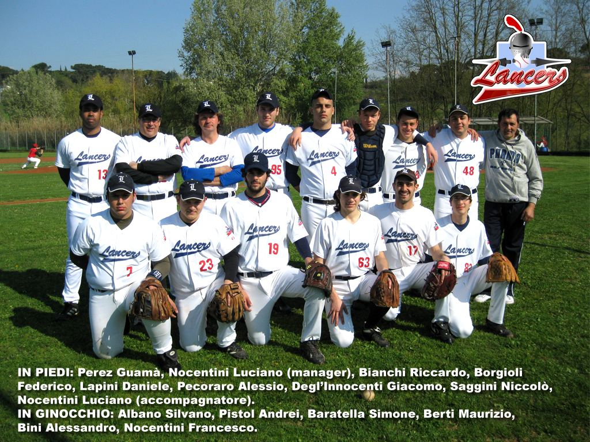

Abbiamo subito molte manifeste superiorità ma se andiamo a vedere nel dettaglio i vari incontri potremmo notare come soltanto le due partite con la Fiorentina e l’ultima con l’Antella/Padule siano state partite molto al di sotto delle nostre possibilità.
Nelle 11 sconfitte ben 6 volte siamo stati in vantaggio fino al 5°/6° inning, è naturale che se non riesci a vincere nessuno di questi incontri il morale e il peso della prima stagione senior si fa sentire su di un gruppo giovane.
Questa, però, non può essere una scusa in quanto in difesa sono stati commessi continui errori che molte volte non hanno aiutato i lanciatori sia partenti che rilievi.
Analizzando i lanciatori si evidenzia un miglioramento tecnico che però non ha ancora influenzato il rapporto con l’emotività del giocatore che provoca ancora errori di cosiddetta “paura”.
Baratella (1993) ha sviluppato una velocità incredibile rispetto all’anno scorso e ha tenuto viva la squadra nonostante i continui errori difensivi; lo stesso Nocentini (1992) ha fatto dei grandi passi in avanti subendo ben poco soprattutto nella seconda metà di stagione.
In diamante il duo Pistol-Degl’Innocenti ha mostrato ottimi miglioramenti, il primo sviluppando un tiro talmente potente e preciso da valutare la possibilità di vederlo come pitcher, il secondo ha dimostrato di avere un’ottima reattività anche se manca ancora di calma. Altra nota positiva è Bianchi nel ruolo di seconda base nonostante gli anni di inattività.
La vera rivelazione del 2010 sono certamente gli esterni; Bini (1983), Berti (1992), Perez (1973) e Graceffa(1993), questi sono riusciti a farsi carico della difesa con giocate a casa base spesso finalizzate con out e vari doppi giochi.
Nel box di battuta c’è da sottolineare l’esplosione di Albano (1993), che al primo vero anno senior ha una media stagionale intorno a 450 e molti punti portati a casa.
Lo stesso è avvenuto a capitan Bini che per la prima volta in carriera batte come un matto con una media stagionale intorno ai 500.
Da sottolineare l’importanza dei due allenatori Luciano Nocentini e Roberto Zalonaci; del dirigente accompagnatore Luciano Nocentini (omonimo dell’allenatore), i tre hanno tentato di plasmare questa squadra particolarmente giovane, riuscendoci solo in parte.
Quest’anno è oramai passati, si pensa alla prossima stagione con la speranza che gli errori commessi quest’anno siano il punto di partenza di ognuno per migliorarsi e migliorare l’intera squadra. A presto dal Lanciere!
7 dicembre 2011 · Serie B
Lancers team “B”, bilancio 2010